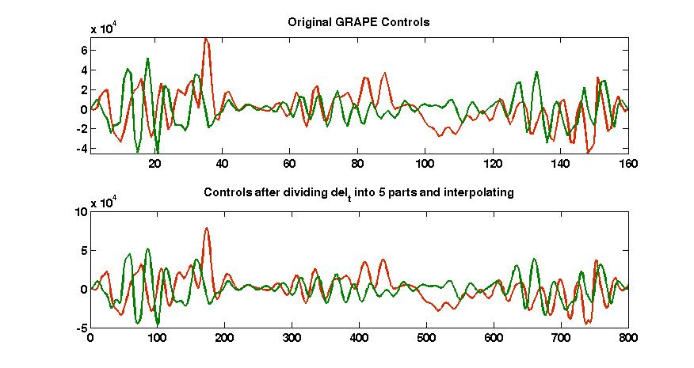

FileName : smoothGRAPE
Contents
Description
Smoothens the GRAPE pulse by decreasing the del_t (which increases the N) and interpolating the original values using the matlab inbuilt function spline.
Command
new_u=smoothGRAPE(GRinfo,n)
GRinfo : Variable in which all the information of grape pulse is stored.
n : Represents the number of time you want to divide del_t in, del_t is the time for each division in the GRAPE pulse
new_u : it is the output in which your new added controls be saved.
Example Output
Shown below is an example plot. THe pulse is a 90x on all the spins acted upon the thermal equilibrium state.

function u_smooth = smoothGRAPE(GRinfo,n) global gra gra = GRinfo; del_t = gra.del_t*1e6; for j=1:gra.m x=1:del_t:del_t*gra.N; y=gra.u(:,j); xx =1:del_t/n:del_t*gra.N; u_smooth(:,j) = spline(x,y,xx); end